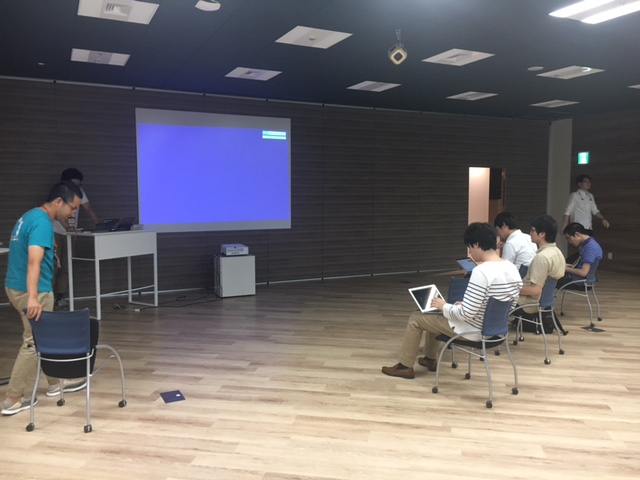
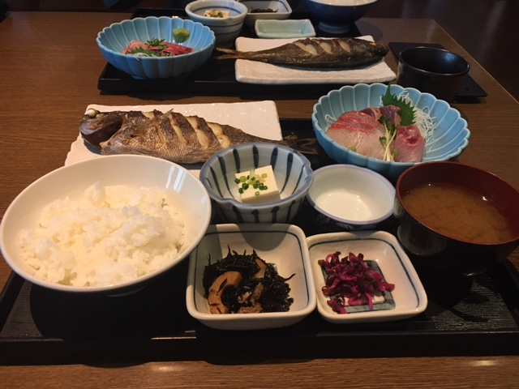
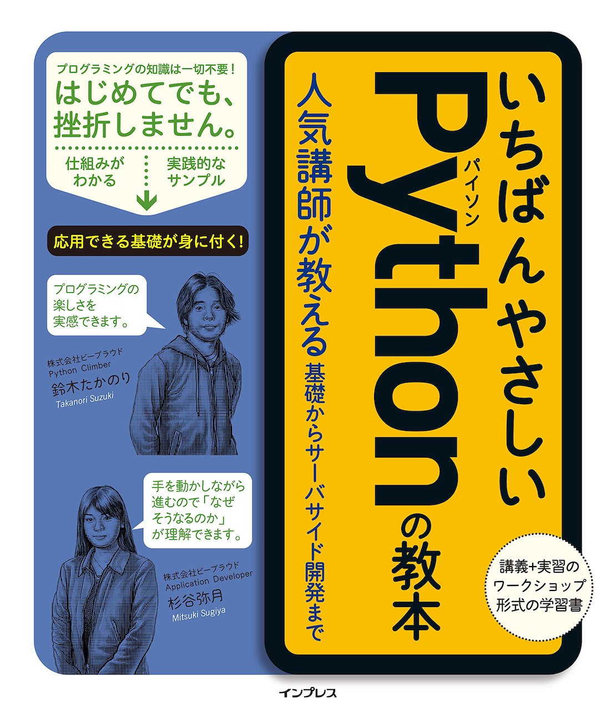
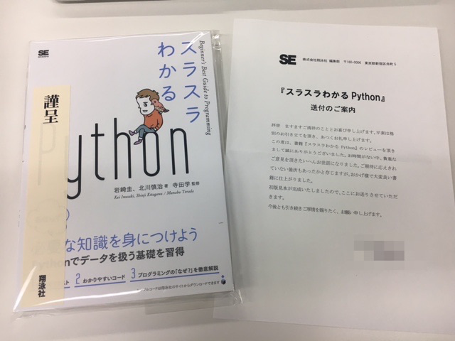

Pythonもくもく自習室 #2に参加しました #rettypy¶
目次
やったこと¶
PyCharmからJupyterを触ってみる¶
TerminalからJupyter立ち上げて使ったほうが速かったです。 「これぞ！」っていうPyCharmからJupyterを触る理由が見つかったらまた手をだすかもしれませんが、どうなんでしょう。ショートカットとかぶつかりまくって大変そう。
EffectivePython 第3章 クラスと継承¶
本を読んでたメモです。あしからず。
項目22: 辞書やタプルで記録管理するよりもヘルパークラスを使う¶
collectionモジュールのnamedtupple型
namedtuppleの限界 (namedtuppleは多くの場合に有用だが、害の方が多くなることもある)
namedtuppleクラスでは、デフォルト引数値を指定できない。データに多くのオプションプロパティがあるときにやっかい。 少数とは言えない個数の属性を扱うなら、それ専用のクラスを作るほうがよい選択。
namedtuppleインスタンスの属性値は、数字の添字とイテレーションを使ってアクセスできる。外部化されたAPIの場合は特に、このような意図しない使い方をされていたために、後に本物のクラスに移行するのが難しくなることがある。namedtuppleインスタンスのすべての用途を制御できていないなら、自分のクラスを定義したほうがよいでしょう。
覚えておくこと
値が他の辞書や長いタプルであるような辞書を作るのは止める。
完全なクラスの柔軟性が必要となる前は、軽量で変更不能データのコンテナであるnamedtuppleを使う。
内部状態辞書が複雑になったら、記録管理コードを複数のヘルパークラスを使うように変更する。
項目23: 単純なインターフェースにはクラスの代わりに関数を使う¶
覚えておくこと
Pythonのコンポーネント間の単純なインターフェースは、たいてい、クラスを定義してインスタンス化しないでも、関数で済ませられる。
Pythonでは関数とメソッドの参照はファーストクラスなので、他の型同様、式中で使うことができる。
特殊メソッド __call__ は、クラスのインスタンスが、Pythonの普通の関数として呼び出されることを可能にする。
状態を保守するために関数が必要な場合、状態を持つクロージャを定義するかわりに、 __call__ メソッドを提供するクラスを定義することを考える。
成果発表¶
(発表してる最中の写真取ればよかった。ちょっと写真取るタイミングミスった感がある。)
タケオカ もくもく会初参加。
Pythonチュートリアル(オライリー)を読んでいたが、内職してたらそっちに集中してしまいました。
次回はものを作りたい。
@ryoo17 Djangoでアプリを作ってました。書籍管理アプリ。漫画を管理するもの。
-
本がでます→ PythonユーザのためのJupyter[実践]入門
finpyというものを運営してます。次回未定。PyConでRejectされたものをやるかも？
ホロビューズ
ツツミ 朝はシステムトレードをPythonでやろうとして、データを取ってくるところまで実施。
-
ニューラルネットとその実装をTensorFlowでやろうとした。チュートリアルやってました。
Understanding LSTM Networks – colah’s blog がわかりやすかった。
@marugari 購買分析のLibraryの改造をしてた。計算のズレのあたりがついたので、後で見直す。
タケノ 画像処理コトハジメ。
どのFWを触ろうかという比較をしたり、データセットを準備したところまで実施した。
chainer/comparison.rst に各FWごとの比較があるのでそちらが参考になった。
オオヒラ 前処理の手続きを楽にしようとしてた。統計よりの作業。
イトウ@pir0w PyQやってました。中級をスタートしてた。
正規表現は慣れが必要かなと思った。もう少しでDjangoにいけそう。
苦労したところ。for文でenumrateが慣れが必要かなと。←イテレータ系が独特かなと思うけど、覚えると楽。
ITO Shogo
自社サービスの遅いところ、検索部分のカイゼン。キャッシュに入れるデータが多すぎて取り出す時に時間かかってた。キャッシュに入れたほうが遅いという…
ISCONが好きで、それを模した社内コンテストをするための準備をしてた。
-
いちばんやさしいPythonの教本 を読んだり、Blogを書いてました。
自分がPython始めるころにあったら良かったなと思った。
@kashew_nuts 上記参照
mdrms 電気をつけたまま寝落ちすることが多いので、値落ちの状況を可視化したい→fitbitの新把握データからとった。
@shinyorke PyConの準備してました。
Airflow: Batch処理、前処理などを毎日動かすために使用。
クローラーが走った後に次の処理に行かない。適当なpython実行ファイルで試したら動いたが、クローリングにScrapyを使用しており、そちらで試すとダメらしい。
その他¶
お昼は魚のお店に行ったので釣りの話を聞いていたり、キャリアの話をしていたりしてました。もくもくタイム間にパッケージングの話をしたり、おいしいお菓子をいただいたりしてましたね。
次回の参加はこちらから→ Pythonもくもく自習室 #3 @Rettyオフィス - connpass
お昼に食べた定食はボリューム満点でした。うまかった。
「いちばんやさしいPythonの教本 人気講師が教える基礎からサーバサイド開発まで」を読んだ¶
いちばんやさしいPythonの教本 人気講師が教える基礎からサーバサイド開発まで という本を読みました。ということで書評的な何かを書きたいと思います。
フルカラー¶
重要なところが目に見えやすい
塾みたいなリアル感ある (1週間しか塾いったことないけど)
フルカラーでこの値段でいいの…？という充実度
実際に触りだすと気になる細かいところまでサポートできてる¶
半角スペースが可視化されてる
プロンプトの表示について書いてる
あとあと疑問に思いそうなところも要所々々で解説を入れてる
何度も読み直せる¶
「これは何のためにやるんだ？」と思うところにちゃんと説明があるので読み直す時にもためになる
単にPythonの文法を教えるだけじゃなく、 考え方 も教えてくれるので再現性がある
1レッスン毎に2~6ページ程と簡潔なので振り返りやすい
雑感¶
総じてスキがないように感じました。全体を通して、「ああ、それ説明してほしいよね！」って内容を各所に散りばめてくれているなと。
これに加えて、最近話題のPython学習用オンラインサービスのPyQのキャンペーンコードもついてくるのだからお得というしかないのでは….？
+αスラPyとの比較について¶
「スラスラわかるPython」という書籍のレビュアーを担当しました というBlogも書きましたがどっちがいいかと言われれば、「好み」としか言えないですね。どちらも初心者向けの本ですが、どれだけ良くても「合う合わない」はあると思うのでぜひご自身の目で見比べてえらんで欲しいです。
「スラスラわかるPython」という書籍のレビュアーを担当しました¶
スラスラわかるPython という書籍が8/7に発売されました。
内容紹介にもありますが、「せっかく覚えたのにこの機能全然使わない！」ということがないので、 「本当にPythonで使われることを学びたい」人にオススメしたいです。
目次¶
こんな感じの目次です。
第1章 Pythonをはじめよう
第2章 型とメソッド
第3章 条件分岐
第4章 リストと繰り返し処理
第5章 辞書型
第6章 関数
第7章 エラーと例外
第8章 スクリプト、モジュール、パッケージ
第9章 Webスクレイピング
第10章 ファイル操作
付録
こんな方にオススメ¶
はじめてプログラミングを学ぶ人
プログラミングでどんなことができるか知りたい人
Pythonに興味がある人
Pythonチュートリアルを読んで挫折した人
必要なことだけを集中して学びたい人
「プログラムが書ける！」という実感を得たい人
4コマ漫画が好きな人
etc…
本書はWindows・macOSに対応し、執筆時点で最新のPython3.6.1で解説しています。 Python2と3をどちらを使うべきかも述べられているのでその辺が気になる人もおすすめできます。
雑感¶
今回書籍のレビューを初めて担当させていただきました。これからPythonプログラミングをスタートする人の手助けになるといいなぁと思います。